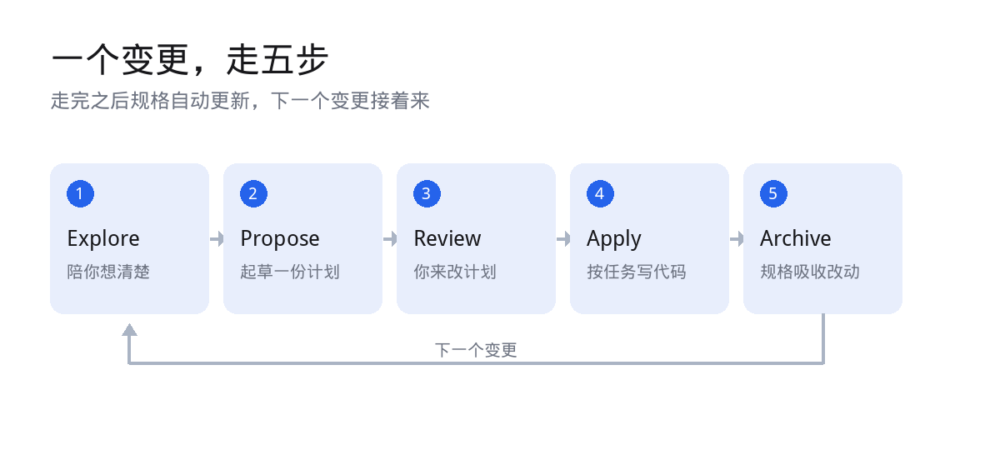
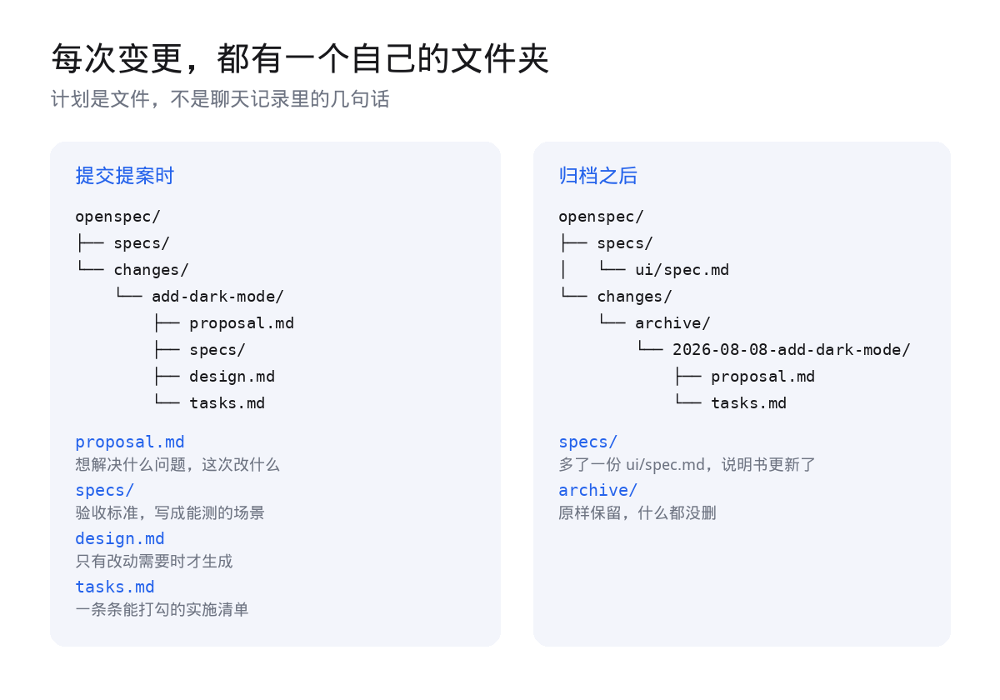
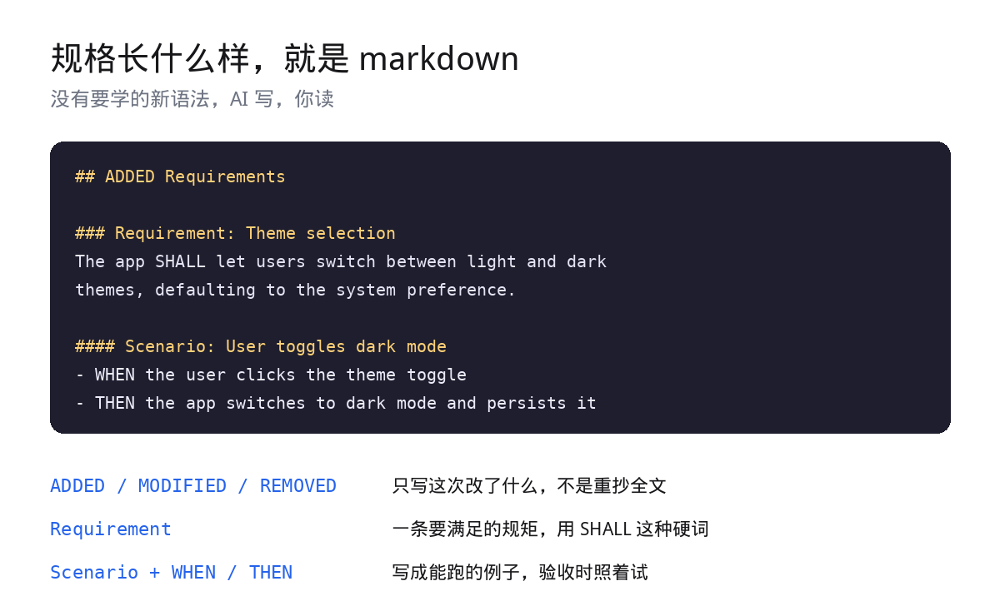
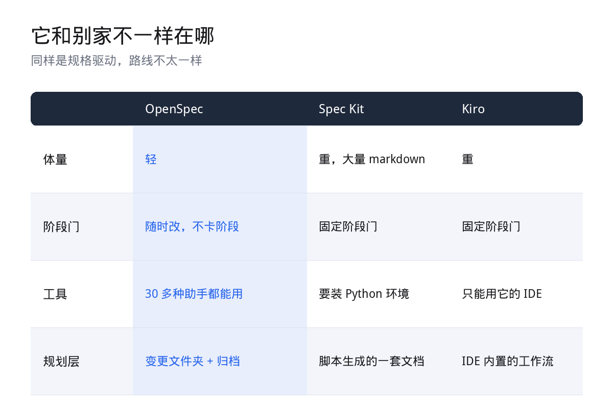

一个变更走五步，走完规格自动更新。
今天聊 OpenSpec，Fission AI 开源的一套规格驱动开发工具，MIT 协议。
它要解决的场景每个人都遇到过。你和一个编程助手来回聊了半小时，它开始写代码，写到一半你发现方向不对。回头看聊天记录，你其实早就说清楚了，但它理解的和你想的不是一回事。
01
问题不在提示词，在没说清
先说一个我越来越确信的判断。聊天记录是最不适合承载需求的地方。
它不是没记住，是它记的东西用过就散。你们在哪一句上达成了共识，中间否掉了哪两个方案，为什么最后选了现在这个，全都在对话流里。新开一个会话，一切归零。
还有一层更隐蔽的。你说我要暗黑模式，这句话对你是完整的，对它是残缺的。切换按钮放哪，要不要跟随系统的深浅色偏好，用户的选择存在哪，这些你没说，因为在你脑子里是常识。
它不是不聪明，是没对齐。而对齐这件事，把提示词写得更长是解决不了的。
你和它之间缺的不是更好的提示词，是一份两边都看过、都点过头的说明书。
02
它把需求变成了一个文件夹
OpenSpec 的做法很朴素，就是把需求从聊天框里拎出来，变成仓库里的文件。装它需要 Node 20.19 以上。
npm install -g @fission-ai/openspec@latest
cd your-project
openspec init
第二条命令会在项目根目录初始化，顺带问你在用哪几个 AI 工具，然后往对应目录里写工作流文件。官方文档展示的那次初始化，为一份 Claude Code 配置写入了 6 个技能和 6 个命令。
之后你和它协作的方式，是一套固定循环。图上这五步，就是它全部的骨架。
每一次变更，都会在 openspec/changes/ 下面拥有一个自己的文件夹。

提案时各归各的文件，归档后并回主规格。
四个文件各管一段。proposal 写为什么做、这次改什么。specs 写验收标准。design 只有在改动确实需要时才生成。tasks 是一份能一条条打勾的实施清单。
这里有个小细节要注意。命令的拼写随工具而变，/opsx:propose 是标准写法，Cursor 和 Copilot 里写成 /opsx-propose，Amazon Q 是 @opsx-propose，Codex 是 $openspec-propose。init 会告诉你在自己那套工具里该敲哪种。
计划是文件，能进 git、能被 review、能 diff。这是它和纯聊天最本质的区别。
03
示例一，还没想清楚就先让它陪你想
第一步是 /opsx:explore，官方管它叫思考模式。
用法就是一句人话，不用背命令。
帮我探索一下，这个应用里限流该怎么做。
它会去翻你的代码，问该问的问题，摆出几个可选方案，还会挑战你假设。关键是它不写代码，默认也不落任何文件。
这和普通提问的差别在哪。你直接问它限流怎么做，它会给你一个答案。你用 explore，它会把问题摊开，把你自己都没想清楚的地方暴露出来。比如限流的粒度是按 IP 还是按用户，超限之后是拒绝还是排队。
等想法成形了，接一句就行，不用把刚才聊的再讲一遍。
把我们刚讨论的变更提出来。
它这一步产出的不是代码，是一个更清楚的问题。
04
示例二，想清楚了就让它起草提案
第二步是 propose。如果你已经清楚要什么，可以直接开。
/opsx:propose add-dark-mode
它会补问几个必要的问题，然后把上面那个变更文件夹整个建出来。到这一步为止，一行代码都没有，它停在计划上。
规格到底长什么样，其实比大多数人想的简单。

就是 markdown，没有一个字符是新语法。
ADDED、MODIFIED、REMOVED 这三种小标题，说明这次是加、改还是删，不用重抄一遍全文。Requirement 底下用 SHALL 这种硬词写一条要满足的规矩。Scenario 用 WHEN 和 THEN 写成能跑的例子。
规格的价值全在可测试上。写一句「支持暗黑模式」等于没写，写成「点开关之后切到暗色并且记住选择」，才算数。
05
示例三，趁还没写代码，把计划改对
第三步是 review，也是我最想推荐的一步。
官方给的阅读顺序很实在。先看 proposal，问自己这是不是那个问题，大小对不对。再看 specs，这一段最值钱，问自己这些要求如果都做到了，我认不认。最后看 tasks，覆盖得够不够，有没有顺手夹带的多余活。
改法有两种，都行。你自己打开文件直接改，因为它就是 markdown。或者直接告诉它哪里不对，比如规格里漏了未登录的情况，它会去改对应的产物。
然后才是第四步 apply。这里官方有个很实用的提醒：开一个新的会话再执行。实现阶段上下文越干净越好。
应用 add-dark-mode 这个变更。
它会读那个变更文件夹，照着 tasks 一条条做，做完一条勾一条。进度就存在勾选框里，没有藏在别处的状态。上下文用完了、中途断了，新开一个会话让它继续，它会从第一个没打勾的地方接着做。
改一行 markdown，比改一百行代码便宜得多。这就是把 review 放在 apply 前面的全部意义。
06
示例四，做完归档，规格变成系统的说明书
所有任务都打上勾，最后一步归档。
/opsx:archive
openspec archive add-dark-mode -y
归档做两件事。第一件，把变更里的规格并进 openspec/specs/，新增的追加进去，修改的顶掉旧的版本。第二件，把整个变更文件夹挪进 archive 目录，前面加一个日期，什么都没删。
归档之后的分工变得很清楚。specs 描述系统现在会做什么，是唯一的真相；archive 记录它是一步步怎么变成这样的。
平时还有几条命令挺顺手。
openspec list 列出进行中的变更
openspec view 一屏看完成度
openspec validate 检查结构和格式问题
openspec show 打印某一份产物
规格不再是写完就扔的文档，它跟着代码一起长大。
07
它和别家不一样在哪
规格驱动这条路不止一家在走，路线差别其实挺大。

体量、阶段门、工具支持，三条上分岔。
GitHub 的 Spec Kit 更周全，但也更重，有固定的阶段门，产出大量 markdown，还要装 Python 环境。AWS 的 Kiro 很强，代价是被锁在它的 IDE 里，模型也只能用 Claude。
OpenSpec 的取舍是轻。不卡阶段，任何一份产物什么时候改都行，30 多种编程助手都能用。
还有一个正在测试的功能叫 Stores，思路我很喜欢：把规划单独放一个仓库，让多个代码仓库、多个团队共用同一份规格。功能横跨三个仓库的时候，仍然只有一份计划。
顺带说一句，OpenSpec 自己是拿 OpenSpec 开发的，在它的仓库里就能翻到它自己的规格和正在进行的变更。这点挺有说服力。
它当然也有代价。多了一个文件夹要维护，多了一步要你亲自把规格读一遍。
但这一步换来的是，你和它终于在看同一份东西了。
AI 写代码的能力早就够用了，现在缺的是别让它写偏。规格就是那条基准线。
OpenSpec · Fission AI · MIT
安装命令、五步循环、目录结构与对比结论均取自官方文档与仓库 README。